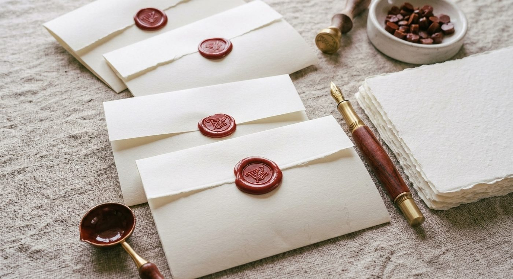
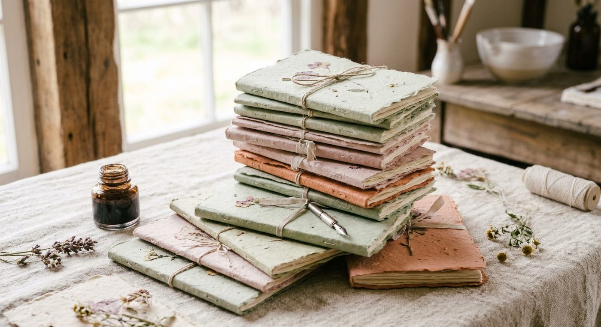
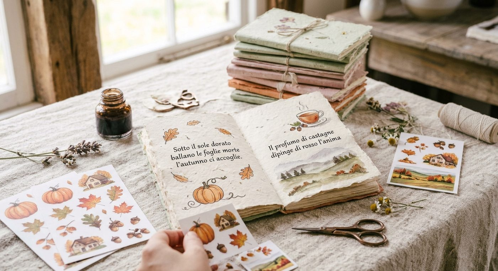
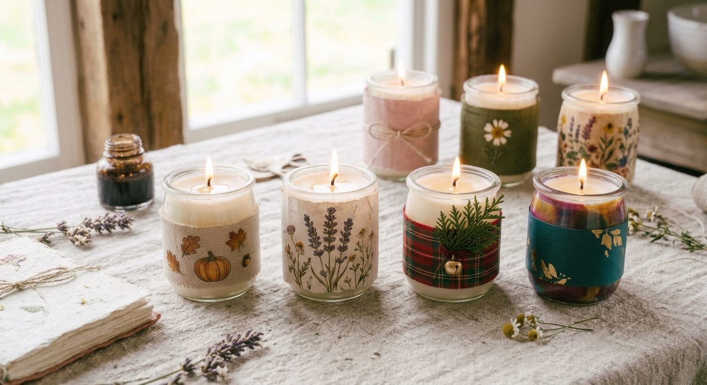

“
Creare con le mani è un atto di preghiera e di risveglio. Quando la mente tace e le mani plasmano la carta, tracciano una parola a inchiostro, rilegano un diario, colano la cera di una candela per un rituale o dispongono sul tavolo le Carte dei Nat per dialogare con gli archetipi e gli antenati, l'anima trova finalmente lo spazio per raccontarsi. Nella mia visione, la Craft Art è una via meditativa per ritrovare la lentezza, la bellezza e il proprio centro.
Nel mio fare Anima, la creazione manuale si ispira alla filosofia artigianale nata nel periodo vittoriano, un'epoca che amo profondamente per il suo ritorno alla purezza della materia, alla cura del dettaglio e al rispetto dei ritmi naturali. Per me la Craft Art non è un semplice esercizio estetico, ma uno strumento vivo che intreccio al mio percorso di scrittrice e ricercatrice, utilizzandolo come canale d'elezione nei miei percorsi di risveglio della mente.
Ogni foglio di carta fatto a mano, ogni calligrafia, ogni quaderno rilegato, ogni candela poetica e la lettura immaginale delle Carte dei Nat sono tesori dedicati a chi desidera radicarsi nel presente, custodendone le memorie e la poesia.
Nata dall'incontro lento tra acqua, fibre e gesti antichi, la carta fatta a mano è una superficie viva. Ogni foglio conserva piccole imperfezioni, sfumature e bordi sfilacciati che raccontano di pazienza e presenza. Non è solo un supporto per scrivere, ma una materia che respira: un grembo delicato pronto ad accogliere le intenzioni, le memorie e i pensieri più puri. Ci sono parole che si scrivono con l'inchiostro e altre che si intrecciano con la materia. Qui la carta prende forma in racconti che diventano scrigni di stoffa e carta, e il gesto manuale si fa meditazione.

Dedicopoesie & Calligrafia
L'incanto delle parole scritte a stilografica e pennino per celebrare Anima
L'inchiostro traccia solchi leggeri sul foglio, trasformando il pensiero in un segno visibile e sacro. Le Dedicopoesie nascono dall'ascolto e prendono forma attraverso il ritmo lento della mia stilografica. Ogni parola tracciata a mano diventa un'opera unica, un dono visivo nato per celebrare un momento, un legame o una rinascita di Anima.

Quaderni e brevi Fiabe Rilegate e Scritte a Mano
Scrigni per il nostro bambino adulto, custodi della felicità di stringere tra le mani piccoli tesori
Cuciti e rilegati con cura artigianale, questi quaderni e piccoli racconti scritti a mano nascono per dare voce al nostro bambino adulto. Sono un invito a ritrovare la meraviglia e la gioia pura di quando, da piccoli, custodivamo tra le mani i nostri tesori più segreti. Piccoli libri d'affezione, fatti per ricordare che la bellezza dell'incanto non ha età.

Diario Creativo & Scrapbooking
Spazio di ascolto, libera espressione e risveglio della mente
Il diario creativo è un rifugio in cui la parola incontra la materia, il colore e le immagini dell'anima. Attraverso lo scrapbooking e il gesto manuale, la mente rallenta, il giudizio tace e la creatività diventa una pratica di meditazione e risveglio interiore. È uno spazio intimo dove dare forma alle emozioni ma anche un luogo del cuore aperto per il futuro: una traccia viva in cui tornare nei momenti bui e tristi che a volte la vita ci porta a vivere, per ritrovare la strada, fare luce e ricordarsi di sé.

Candele Poetiche & Rituali
Fiamme di luce per custodire intenzioni e fare spazio al silenzio
Create a mano con cere naturali, essenze e dettagli botanici, le candele poetiche nascono per accompagnare i momenti dedicati a sé e i piccoli rituali quotidiani. La loro fiamma non serve solo a illuminare una stanza, ma a fare luce dentro: un punto di fuoco e calore attorno al quale raccogliersi per meditare, scrivere, affidare un'intenzione al tempo e ritrovare la sacralità dei propri spazi interiori.
Lettura Immaginale con le Carte dei Nat
Uno strumento di ascolto, dialogo con gli antenati e pacificazione interiore
Ispirate agli spiriti della natura e al metodo immaginale, le Carte dei Nat non sono un semplice strumento di divinazione, ma uno specchio di Anima. Attraverso i loro simboli e archetipi ancestrali, la lettura diventa un incontro sacro in cui esplorare le proprie radici, sciogliere i nodi delle costellazioni familiari e ascoltare la voce guida che abita dentro di noi per ritrovare chiarezza e armonia sul proprio cammino.
Ti invito a rallentare il passo e a sfogliare con gli occhi questi tesori. Che tu desideri un'opera unica creata su misura o voglia scrivermi per iniziare insieme un percorso di “fare Anima” attraverso l'arte, la materia e il simbolo, questo è il tuo rifugio.